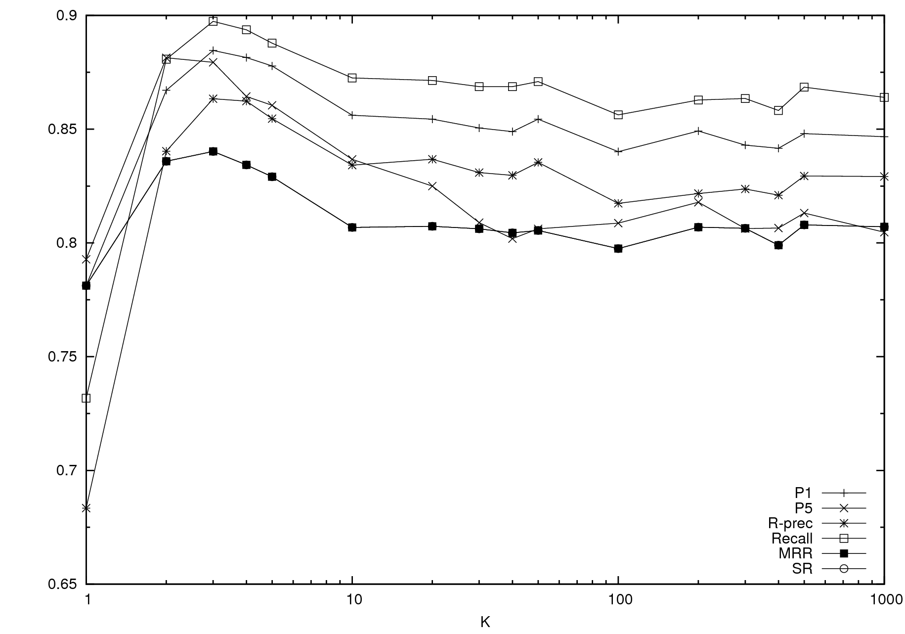
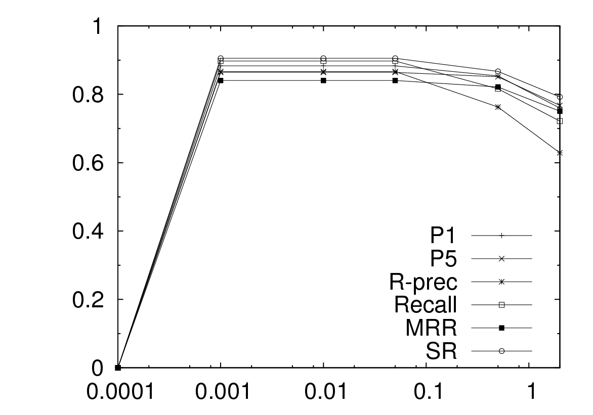
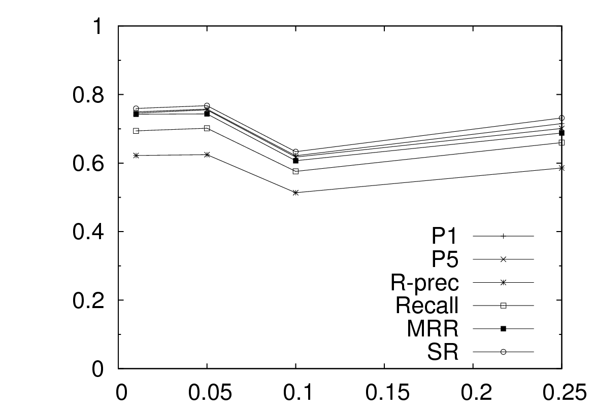

| Up | Next | Prev | PrevTail | Tail |
In this section, we further analyze the results presented in the previous section and answer the remaining research questions. We first look at the inter-annotator agreement between the assessors. We then turn to the performance of the different textual representations of the Wikipedia content that we use. Further, we consider the robustness of the performance of our methods with respect to various parameter settings, provide an analysis of the influence of the feature types on the end results, and also report on the informativeness of the individual features. We conclude with an error analysis to see which queries are intrinsically difficult to map to the DBpedia portion of the LOD cloud.
Unless indicated otherwise, all results on which we report in this section use the best performing approach from the previous section, i.e., the SVM classifier with a linear kernel using the full queries (with ten-fold cross-validation when applicable).
|
| P1 | R-prec | Recall | MRR | SR |
| full text | 0.5636 | 0.5216 | 0.6768 | 0.6400 | 0.7535 |
| content | 0.5510 | 0.5134 | 0.6632 | 0.6252 | 0.7363 |
| title | 0.5651 | 0.5286 | 0.6523 | 0.6368 | 0.7363 |
| anchor | 0.6122 | 0.5676 | 0.7219 | 0.6922 | 0.8038 |
| first sentence | 0.5495 | 0.5106 | 0.6523 | 0.6203 | 0.7268 |
| first paragraph | 0.5447 | 0.5048 | 0.6454 | 0.6159 | 0.7190 |
| title + content | 0.5604 | 0.5200 | 0.6750 | 0.6357 | 0.7535 |
| title + anchor | 0.5934 | 0.5621 | 0.7164 | 0.6792 | 0.7991 |
| title + content + anchor | 0.5714 | 0.5302 | 0.6925 | 0.6514 | 0.7724 |
| title + 1st sentence + anchor | 0.5856 | 0.5456 | 0.6965 | 0.6623 | 0.7755 |
| title + 1st paragraph + anchor | 0.5777 | 0.5370 | 0.6985 | 0.6566 | 0.7771 |
|
|
To assess the agreement between annotators, we randomly selected 50 sessions from the query log for judging by all annotators. We consider each query-concept pair to be an item of analysis for which each annotator expresses a judgment (“a good mapping” or “not a good mapping”) and on which the annotators may or may not agree. However, our annotation tool does not produce any explicit labels of query-concept pairs as being “incorrect,” since only positive (“correct”) judgments are generated by the mappings. Determining the inter-annotator agreement on these positive judgments alone might bias the results and we adopt a modified approach to account for the missing non-relevance information, as we will now explain.
We follow the same setup as used for the results presented earlier by considering 5 concepts per query. In this case, the 5 concepts were sampled such that at least 3 were mapped (judged correct) by at least one of the annotators; the remaining concepts were randomly selected from the incorrect concepts. We deem a concept “incorrect” for a query if the query was not mapped to the concept by any annotator. For the queries where fewer than 3 correct concepts were identified, we increased the number of incorrect concepts to keep the total at 5. The rationale behind this approach is that each annotator looks at at least 5 concepts and selects the relevant ones. The measure of inter-annotator agreement that we are interested in is determined, then, on these 5 concepts per query. Also similar to the results reported earlier, we remove the queries in the “anomalous” categories.
The value for Cohen’s is 0.5111, which indicates fair overall agreement ( ranges from –1 for complete disagreement to +1 for complete agreement) [13, 77, 179]. Krippendorf’s is another statistic for measuring inter-annotator agreement that takes into account the probability that observed variability is due to chance. Moreover, it does not require that each annotator annotates each document [13, 123]. The value of is 0.5213. As with the value, this indicates a fair agreement between annotators. It is less, however, than the level recommended by Krippendorff for reliable data ( = 0.8) or for tentative reliability ( = 0.667). The values we obtain for and are therefore an indication as to the nature of relevance with respect to our task. What one person deems a viable mapping given his or her background, another might find not relevant. Voorhees [328] has shown, however, that moderate inter-annotator agreement can still yield reliable comparisons between approaches (in her case TREC information retrieval runs, in our case different approaches to the mapping task) that are stable when one set of assessments is substituted for another. This means that, although the absolute inter-annotator scores indicate a fair agreement, the system results and comparisons thereof that we obtain are valid.
One of our baselines ranks concepts based on the full textual representation of each DBpedia concept, as described in Section 6.4.1. Instead of using the full text, we evaluate what the results are when we rank concepts based on each individual textual representation and based on combinations of fields. Table 6.11 lists the results. As per the Wikipedia authoring guidelines [342], the first sentence and paragraph should serve as an introduction to, and summary of, the important aspects of the contents of the article. In Table 6.11, we have also included these fields. From the table we observe that the anchor texts emerge as the best descriptor of each concept and using this field on its own obtains the highest absolute retrieval performance. However, the highest scores obtained using this approach are still significantly lower than the best performing machine learning method reported on earlier.
Next, we discuss the robustness of our approach. Specifically, we investigate the effects of varying the number of retrieved concepts in the first stage, of varying the size of the folds, of balancing the relative amount of positive and negative examples in the training data, and the effect of varying parameters in the machine learning models.
The results in Section 6.4 were obtained by selecting the top 5 concepts from the first stage for each query, under the assumption that 5 concepts would give a good balance between recall and precision (motivated by the fact there are 1.34 concepts annotated per query on average). Our intuition was that, even if the initial stage did not place a relevant concept at rank 1, the concept selection stage could still consider this concept as a candidate (given that it appeared somewhere in the top 5). We now test this assumption by varying the number of concepts returned for each query.

Figure 6.4 shows the effect of varying the number of retrieved concepts () in the first stage on various retrieval measures. On nearly all metrics the best performance is achieved when using the top 3 concepts from the initial stage for concept selection, although the absolute difference between using 3 and 5 terms is minimal for most measures. As we have observed above, most relevant concepts are already ranked very high by the initial stage. Further, from the figure we conclude that using only the top 1 is not enough and results in the worst performance. In general, one might expect recall to improve when the number of concepts grows. However, since each query only has 1.34 concepts annotated on average, recall can not improve much when considering larger numbers of candidate concepts. Finally, increasing the number of concepts mainly increases the number of non-relevant concepts in the training data, which may result in a bias towards classifying concepts as not relevant by a machine learning algorithm.
Machine learning algorithms are sensitive to the distribution of positive and negative instances in the training set. The results reported so far do not perform any kind of resampling of the training data and take the distribution of the class labels (whether the current concept is selected by the assessors) as is.
|
| P1 | R-prec | Recall | MRR | SR |
| balanced | 0.5777 | 0.4383 | 0.5436 | 0.5960 | 0.6150 |
| random sampling | 0.8833 | 0.8666 | 0.8975 | 0.8406 | 0.9053 |
|
|
In order to determine whether reducing the number of non-relevant concepts in the training data has a positive effect on the performance, we experiment using a balanced and a randomly distributed training set. The balanced set reduces the number of negative examples such that the training set contains as many positive examples as negative examples. On the other hand, the random sampled set follows the empirical distribution in the data. Table 6.12 shows that balancing the training set causes performance to drop. We thus conclude that including a larger number of negative examples has a positive effect on retrieval performance and that there is no need to perform any kind of balancing for our task.
Ideally, the training set used to train the machine learning algorithms is large enough to learn a model of the data that is sufficiently discriminative; also, a test set should be large enough to test whether the model generalizes well to unseen instances.
|
| P1 | R-prec | Recall | MRR | SR |
| 50-50 | 0.8809 | 0.8601 | 0.8927 | 0.8338 | 0.9016 |
| 75-25 | 0.8812 | 0.8599 | 0.8927 | 0.8344 | 0.9015 |
| 90-10 | 0.8833 | 0.8666 | 0.8975 | 0.8406 | 0.9053 |
|
|
Table 6.13 shows the results when we vary the size of the folds used for cross-validation using the SVM classifier on the full query based concept selection. Here, we compare the 90-10 split reported on above so far with a 50-50 and a 75-25 split. From this table we observe that there is no significant difference between the results on various splits. In practical terms this means that the amount of training data can be greatly reduced, without a significant loss in performance. This in turn means that the labor-intensive, human effort of creating annotations can be limited to a few hundred annotations in order to achieve good performance.
Next, we look at important parameters of the three machine learning algorithms we evaluate.
|
| P1 | R-prec | Recall | MRR | SR |
| Full query based concept selection
| |||||
| linear | 0.8833 | 0.8666 | 0.8975 | 0.8406 | 0.9053 |
| gaussian | 0.8833 | 0.8666 | 0.8975 | 0.8406 | 0.9053 |
| polynomial | 0.8738 | 0.7859 | 0.8415 | 0.8364 | 0.8876 |
| N-gram based concept selection
| |||||
| linear | 0.7998 | 0.6718 | 0.7556 | 0.8131 | 0.8240 |
| gaussian | 0.8241 | 0.6655 | 0.7849 | 0.8316 | 0.8641 |
| polynomial | 0.7967 | 0.6251 | 0.7660 | 0.8205 | 0.8589 |
|
| |||||
Table 6.14 shows the results of using different kernels for the SVM classifier, specifically a linear, a gaussian, and a polynomial kernel. On the full query data there is no difference between the linear and gaussian kernel and on the n-gram data there is only a small difference. The polynomial kernel performs the worst in both cases, but again the difference is insignificant as compared to the results attained using the other kernels. The values listed in Table 6.14 are obtained using the optimal parameter settings for the kernels. Figure 6.5 (b) shows a sweep of the complexity parameter for the gaussian kernel. A higher degree of complexity penalizes non-separable points and leads to overfitting, while if the value is too low SVM is unable to learn a discriminative model. For the polynomial kernel we limited our experiments to a second order kernel, as the increase in training times on higher order kernels made further experimentation prohibitive. The fact that there is little difference between the results of using various kernels shows that, for the purpose of reranking queries, a simple linear model is enough to achieve optimal or close to optimal performance. A more complex model leads to limited or no improvement and increased training times.
|
| P1 | R-prec | Recall | MRR | SR |
| Full query based concept selection
| |||||
| binning | 0.6925 | 0.5897 | 0.6865 | 0.6989 | 0.7626 |
| kernel | 0.6897 | 0.5973 | 0.6882 | 0.6836 | 0.7455 |
| N-gram based concept selection
| |||||
| binning | 0.4494 | 0.4088 | 0.6948 | 0.7278 | 0.7710 |
| kernel | 0.5944 | 0.3236 | 0.4884 | 0.5946 | 0.6445 |
|
| |||||
Table 6.15 shows the results of binning versus kernel density estimation (using a gaussian kernel). As was the case with SVM, there is only a small difference between the results on the full query data. The results on the n-gram data do show a difference; binning performs better in terms of recall while kernel density estimation achieves higher precision, which is probably caused by the kernel method overfitting the data.
Figure 6.5 (a) shows the effect of varying the level of pruning for the J48 algorithm on the full query data, where a low number relates to more aggressive pruning. We observe that more agressive pruning leads to slightly better performance over the standard level (0.25), but not significantly so.
An exploration of the machine learning model parameters shows that SVM is the best classifier for our task: even with optimized parameters the Naive Bayes and J48 classifiers do not achieve better results.
| 
(a) |
| 
(b) |
In Section 6.2.3 we identified four groups of features, relating to the n-gram (“N”), concept (“C”), their combination (“N+C”), or the session history (“H”). We will now zoom in on the performance of these groups. To this end we perform an ablation experiment, where each of these groups is removed from the training data.
| Excluded | |||||
| feature types | P1 | R-prec | Recall | MRR | SR
|
| – | 0.7998 | 0.6718 | 0.7556 | 0.8131 | 0.8240 |
| H | 0.6848 | 0.5600 | 0.6285 | 0.6902 | 0.6957 |
| C | 0.4844 | 0.3895 | 0.4383 | 0.4875 | 0.4906 |
| H; C | 0.2233 | 0.1233 | 0.1733 | 0.2233 | 0.2233 |
|
|
Table 6.16 shows the results using n-gram based concept selection. It turns out that both the n-gram specific and n-gram + concept specific features are required for successful classification: when these groups are removed, none of the relevant concepts are identified. From this table we further observe that removing the history features results in a drop in performance, albeit a small one. When the concept features are removed, the resulting performance drops even further and their combined removal yields very low scores. So, although some feature types contribute more to the final performance, each is needed to arrive at the highest scores.
| Excluded | |||||
| feature types | P1 | R-prec | Recall | MRR | SR
|
| – | 0.8833 | 0.8666 | 0.8975 | 0.8406 | 0.9053 |
| H; C | 0.8833 | 0.8666 | 0.8975 | 0.8406 | 0.9053 |
| N; N+C | 0.1000 | 0.0000 | 0.0500 | 0.1000 | 0.1000 |
| N+C | 0.0556 | 0.0222 | 0.0370 | 0.0556 | 0.0556 |
| H; N+C | 0.0333 | 0.0000 | 0.0167 | 0.0333 | 0.0333 |
|
|
Table 6.17 shows the results using full-query based concept selection. In this case, the effect of removing both history and concept based features does not influence the results at all. This can in part be explained by the fact that most history features are based on the counts of the query in various parts of the session. Since we now have a single n-gram (the full query), these counts turn into binary features and may therefore be less discriminative. This is in stark contrast with the n-gram based features that do have a significant effect on performance on all metrics. Similar to the n-gram based data, these features are essential for full query based concept selection. Finally, we observe that there are some dependencies among the types of features. When we remove both the n-gram+concept features and the history features, the performance is worse than when we remove only the n-gram+concept features (although not significantly so).
In sum, all feature types contribute to the performance in the case of n-gram based concept selection. The highest scores are obtained, however, using full query based concept selection. In this case, the history and concept based features do not contribute to the results.
Several methods exist for automatically determining the most informative features given training instances and their class labels. In this section we report on using an information gain based algorithm for feature selection [350].
| N-gram based concept selection | Full query based concept selection
| ||
| 0.119 | 0.190 | ||
| 0.107 | 0.108 | ||
| 0.052 | 0.080 | ||
| 0.040 | 0.056 | ||
| 0.038 | 0.041 | ||
| 0.037 | 0.033 | ||
| 0.031 | 0.025 | ||
Table 6.18 shows the features with the highest information gain values for both n-gram and full query based reranking. The rank at which the retrieval framework puts a concept with respect to an n-gram is most informative. Also, the number of in- and outlinks, and whether the n-gram matches the concept’s label are good indicators of the relevance status of a concept. is the internal identifier of each concept and not a feature that we explicitly implemented. However, it turns out that some DBpedia concepts have a higher a priori probability of getting selected. Indeed, in our manually created assessments 854 concepts are identified, 505 of which are unique; some of the repetitions are caused because of a persisting information need in the user sessions: when a user rewrites her query by adding or changing part of the query, the remaining concepts remain the same and were annotated as such.
For n-gram based concept selection, the number of in- and outlinks, rank, , and whether the concept label equals the query are also strong indicators of relevance for given phrase and concept. Added to these, however, are the frequency of the n-gram in the title or in the anchor texts in this case.
Finally, we provide an analysis of the errors that were made by the machine learning algorithms. To this end, we first examine the relationship between mapping performance and the frequency of the query in the entire query log. We separate all queries in two groups, one for those queries where our approach successfully mapped concepts and one where it failed. In the first group, the average query frequency is 23 (median 2, std. dev. 85.6). In the second group, the average frequency is 6 (median 1, std. dev. 19.5). So, although it seems our approach works best for frequently occurring queries, the high standard deviation indicates that the frequencies are spread out over a large range of values.
| Freq. () | Query | Mapped concepts |
| Well performing queries
| ||
| 64.0 % | wouter bos | WOUTER BOS |
| 18.9 % | moon landing | MOON LANDING |
| 2.22 % | vietnam war | VIETNAM WAR |
| 1.67 % | simple minds | SIMPLE MINDS |
| 1.11 % | spoetnik | SPOETNIK |
| 1.11 % | sarkozy agriculture | NICOLAS SARKOZY; AGRICULTURE |
| 0.557 % | universal soldier | UNIVERSAL SOLDIER |
| Poorly performing queries
| ||
| 57.9 % | gaza | DOROTHEUS OF GAZA |
| 2.78 % | wedding beatrix | KILL BILL; WILLEM OF LUXEMBURG; |
| MASAKO OWADA | ||
| 1.11 % | poverty netherlands 1940s | 1940-1949; IMMIGRATION POLICY; |
| MEXICAN MIRACLE | ||
| 0.557 % | poverty thirties | 1930-1939; HUMAN DEVELOPMENT INDEX |
| 0.557 % | rabin funeral | BILL CLINTON; HUSSEIN OF JORDAN |
| 0.557 % | eurovision songfestival 1975 | EUROVISION SONGFESTIVAL; |
| MELODIFESTIVALEN 1975 | ||
| 0.557 % | cold war netherlands | COLD WAR; WATCHTOWER; WESTERN BLOC |
Table 6.19 shows examples of correctly and incorrectly mapped queries, together with their relative frequency of occurrence in the entire query log. This table provides further indication that the frequency of a query is not a determining factor in the successful outcome of our method. Rather, it is the retrieval framework that puts concepts that contain query terms with a relatively high frequency in the top of the ranking. For example, besides being the queen of the Netherlands, Beatrix is also the name of one of the characters in the movie Kill Bill.
To further investigate the errors being made, we have manually inspected the output of the algorithms and classified the errors into several classes. Since we formulate the mapping search engine queries to LOD task as a ranking problem, we are primarily interested in the false positives—these are the concepts the classifier identified as correct for a query but which the annotators did not select. The classes in which the classifiers make the most mistakes are:
From these classes we conclude that the largest part of the errors are not attributable to the machine learning algorithms but rather to incomplete or imperfect human annotations. Another class of interesting errors is related to the IR framework we use. This sometimes produces “fuzzy” matches when the textual representation of the concept contains the query terms with a high frequency (e.g., selecting CUBA CRISIS for the query “cuba kennedy”). Some of these errors are not wrong per se, but interesting since they do provide mappings to related concepts. Marking them as wrong is partly an artifact of our evaluation methodology, which determines a priori which concepts are relevant to which queries, so as to ensure the reusability our evaluation resources. We have chosen this approach also for practical reasons, since the same annotations are used to generate the training data for the machine learners. In future work, we intend to perform a large-scale post-hoc evaluation in which we directly evaluate the generated mappings to the LOD cloud.
| Up | Next | Prev | PrevTail | Front |